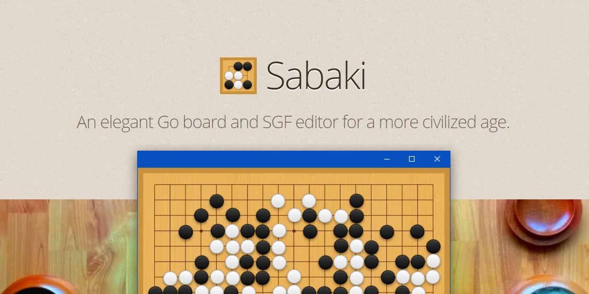
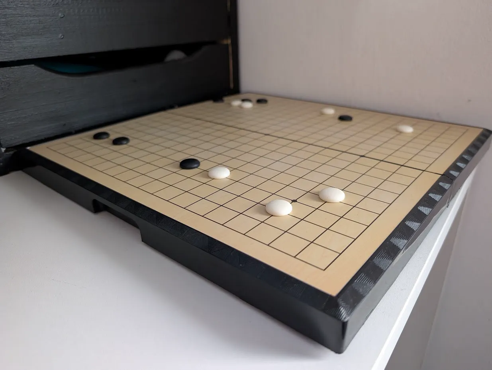
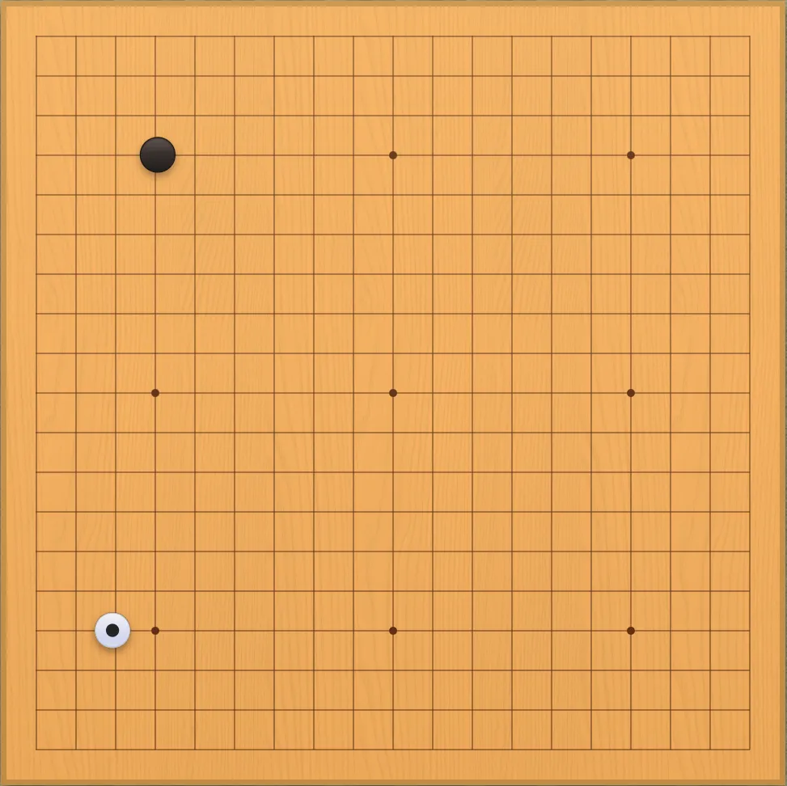
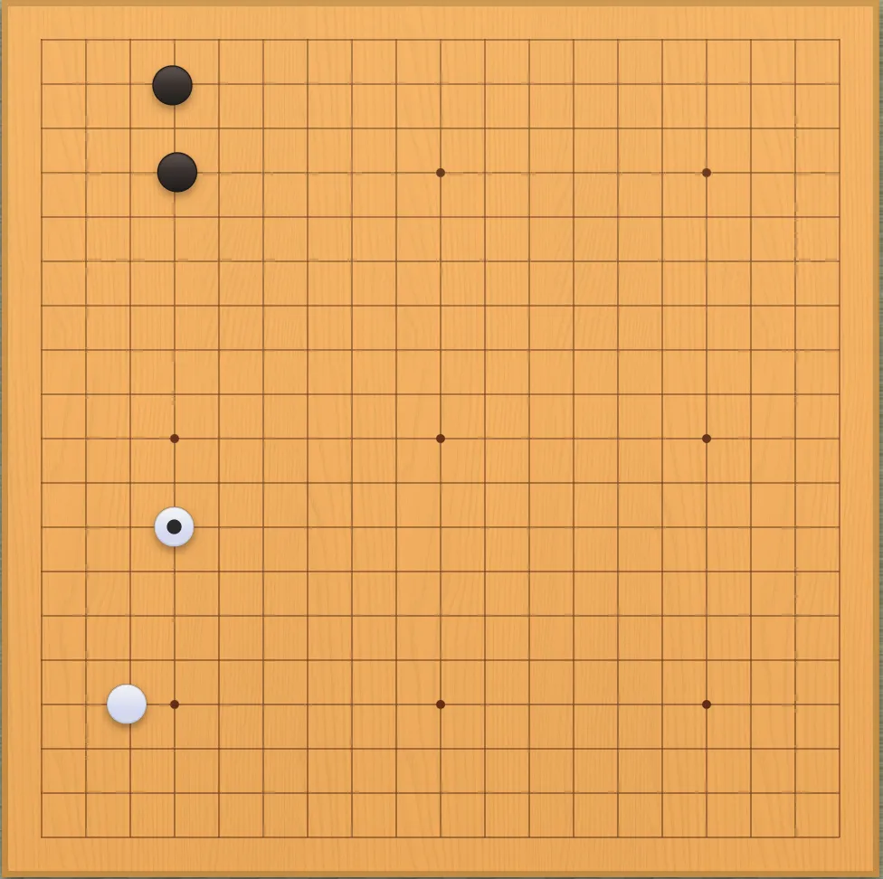
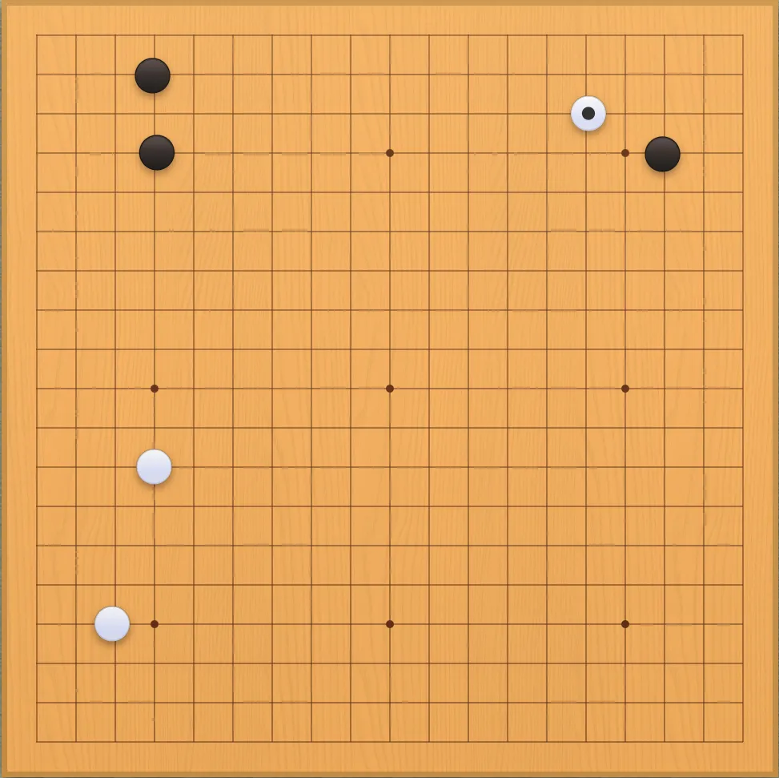
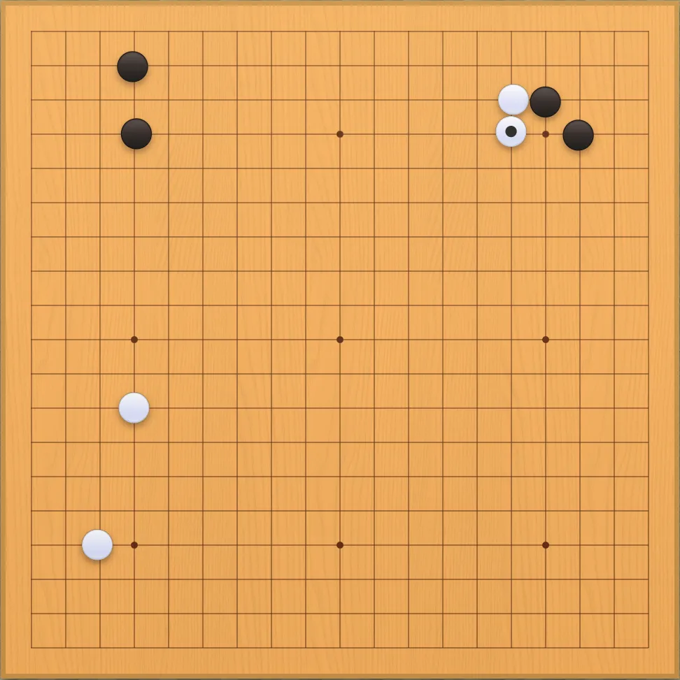
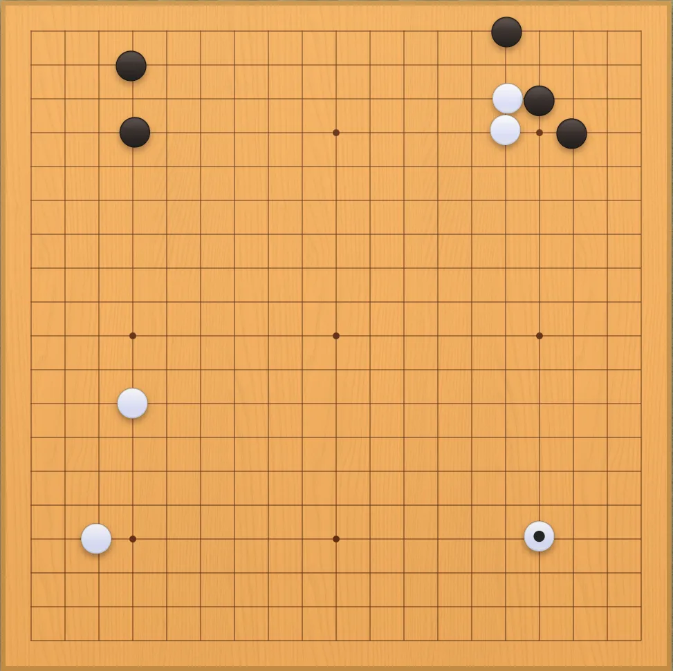
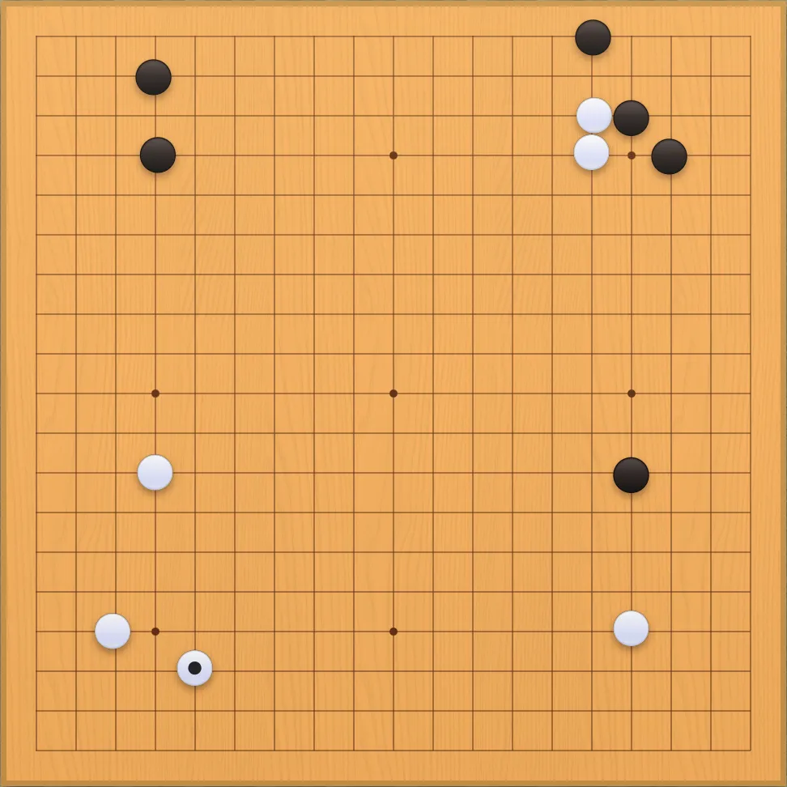
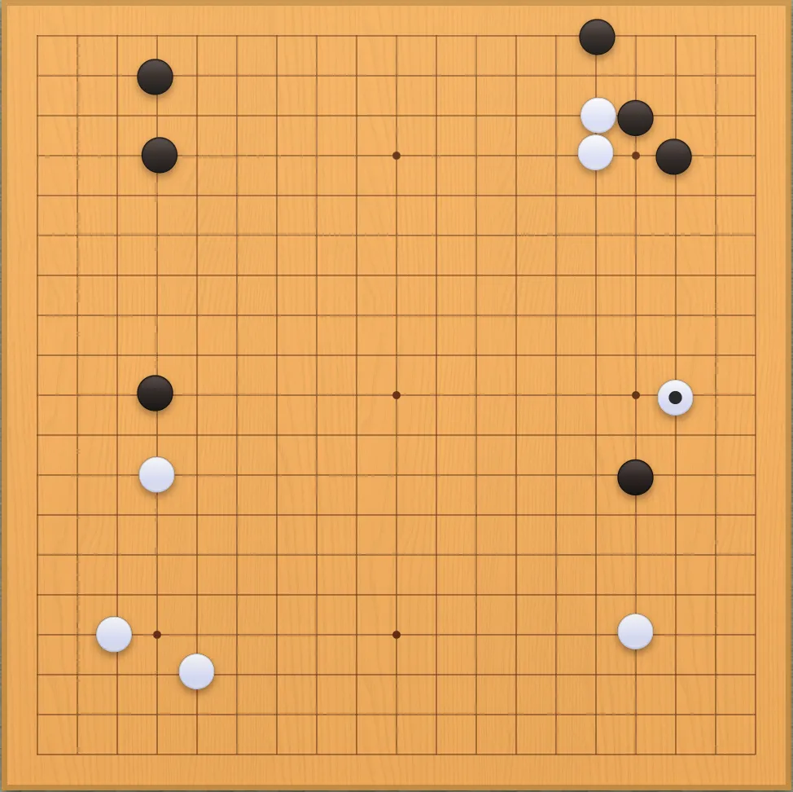

GO - Contra la máquina | Semana 1
Llevo unos meses tratando de establecer ciertos hábitos para incorporarlos a mi vida diaria.
Quien haya intentado establecer una rutina alguna vez sabe que lo más difícil es no abandonar la actividad propuesta antes de que se convierta en un hábito. En mi caso, hace ya mucho tiempo que tomé la decisión de mantener un Commonplace Book o libro de notas: un lugar donde anoto todo aquello que me resulta interesante, desde conocimientos y recordatorios hasta consejos y recetas de cocina.
Es, de alguna manera, mi wiki personal. Para construir este sistema me he basado en tres principios: simplicidad, compatibilidad y disponibilidad.
El resultado es una estructura de archivos en la que cada carpeta
representa un tema y cada subcarpeta, un subtema. Así, por ejemplo, mis
notas de programación se encuentran en
Notas/Informatica/Programacion. Todas las notas están
escritas en Markdown. En mi caso, utilizo Neovim para
escribirlas y Obsidian para navegar por ellas y visualizar el
contenido.
Para garantizar la disponibilidad de mis notas y llevar un control de versiones, utilizo Git y GitHub. Además, mediante un sencillo script que ejecuto desde un widget de Termux, mantengo actualizado mi vault de Obsidian en el teléfono móvil.
¿Y qué tiene que ver todo esto con los hábitos? Pues bien, creo que llevar un registro del proceso día a día ayuda enormemente a mantener una rutina.
Por eso, he añadido una carpeta llamada Rutina a mi
Commonplace Book. Por el momento, contiene cuatro archivos:
dieta.md, ejercicio.md,
meditacion.md y go.md. Sus nombres son
bastante autoexplicativos, creo yo. Hoy os vengo a hablar del último de
ellos: go.md.
En go.md llevo el seguimiento de una partida de Go en
la que mi rival es GNU Go, un motor de Go de
código abierto y gratuito. La particularidad es que
realizo una sola jugada al día.
Para entender bien la idea, hay que tener en cuenta que una partida de Go suele durar entre 90 y 125 jugadas por jugador. Esto significa que, si realizo una jugada al día, tardaré varios meses en terminarla. Tiempo más que suficiente, espero, para que esta actividad acabe convirtiéndose en un hábito.
¿Y por qué el Go? Cada uno de los hábitos que he ido incorporando a mi rutina cumple una función específica, pero todos comparten un mismo requisito: no deben llevarme tanto tiempo como para impedir que pueda practicarlos a diario o casi a diario, dejando a un lado excepciones como los fines de semana, las vacaciones, etc.
En cuanto a su función específica, cada hábito está relacionado con una dimensión distinta de la naturaleza humana: la dieta y el ejercicio se ocupan del cuerpo, la meditación del espíritu y el Go de la mente. El Go era, por tanto, una pieza más del puzle.
Una vez terminados los preámbulos, os cuento cómo pienso desarrollar esta serie de entradas. Mi idea es publicar semanalmente el progreso de la partida y utilizar este blog para compartirlo. Para ello, iré publicando, jugada a jugada, las salidas del programa mencionado anteriormente, en su versión gráfica, mediante la interfaz Sabaki.

En mis notas, simplemente guardo la versión en ASCII.
Cabe señalar que he colocado un tablero de Go junto a mi escritorio para ir reproduciendo la partida y visualizarla mejor.

Antes de pasar a las jugadas, quiero aclarar que soy un absoluto principiante en este juego. Antes de comenzar esta partida, solo había leído el manual que venía con el tablero y The Way to Go, de Karl Baker. Así que podéis esperar auténticas pifias en esta primera partida.
Por cierto, juego con negras.
¡Espero que os guste!







Por el momento, no he tenido ni la más remota idea de cómo proceder al inicio. En el ajedrez, no sé si por experiencia o por intuición, me resulta más sencillo plantear una apertura. Aquí, en el Go, siento el vacío del tablero como la hoja en blanco de un novelista.
No sé por dónde «atacar» ni qué debería cubrir. Mi intuición me dice que debería hacerme sitio en las esquinas, donde están dibujadas las crucetas del tablero.
Trataré, poco a poco, de ir estudiando el juego, viendo partidas en YouTube y entrenando por mi cuenta, fuera de esta partida.
Por ahora, dejo esto por aquí. ¡Hasta la semana que viene!
EnRoot